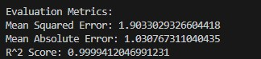

Project 1: Implementation of a Fully Connected Neural Network (FCNN)
Results
Model Build and Parameters
The FCNN has been created successfully and an image of the neural network architecture has been stored along side the model, parameters, features and scalers information. For reproducability all parameters are listed here:
Model Evaluation
Using these paremeters with the bike sharing dataset resulted in following model evaluation metrics:
Result Interpretation
By comparing the expected results with the predicted values, we can evaluate the model's performance. In this case, the predictions closely align with the actual values, indicating strong accuracy.
Note:The small deviations observed are reflected in the evaluation metrics presented earlier. Overall they confirm that the model achieves an excellent fit to the data. More finetuning could further icnrease the model accuracy.
| Dataset | Predicted Value (FCNN Result) | Expected Value (Control Value) | Difference (FCNN Deviation) |
|---|---|---|---|
| 1 | 94.5368423461914 | 93 | 1.5368 |
| 2 | 68.8176498413086 | 67 | 1.8176 |
| 3 | 35.34605407714844 | 35 | 0.3461 |
| 4 | 36.78642272949219 | 37 | -0.2136 |
| 5 | 35.923160552978516 | 36 | -0.0768 |
| 6 | 32.77050018310547 | 34 | -1.2295 |
| 7 | 27.173233032226562 | 28 | -0.8268 |
| 8 | 38.892486572265625 | 39 | -0.1075 |